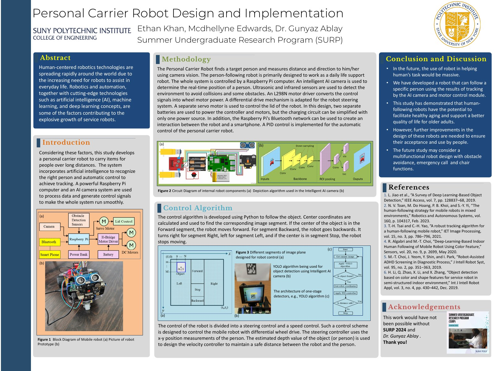

An autonomous robot that follows a specific person while carrying items over long distances, aimed at elderly users and anyone needing mobility assistance. The build combines computer vision, embedded control, and power electronics.
Motor drive and power
I built the motor-drive subsystem around an L298N H-bridge running from a dual-battery supply, keeping motor power and logic power on separate rails so switching transients on the motor side don't disturb the Raspberry Pi. Speed and direction are set by Raspberry Pi PWM, with PID closed-loop control maintaining a safe following distance.
Vision and navigation
A YOLO-based vision system segments the camera frame into directional zones of forward, backward, left, right, and stop. The robot continuously reprocesses target coordinates to adjust movement in real time. Ultrasonic and infrared sensors handle collision avoidance, and a servo controls the storage compartment lid.
Hardware
Software
Research poster

Supported by SURP 2024, with thanks to Dr. Gunyaz Ablay and Mcdhellyne Edwards.